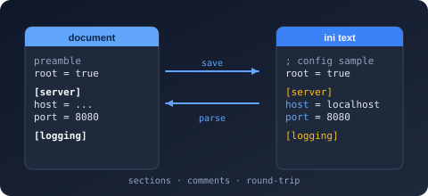

Bodu.Text.Ini
Bodu.Text.Ini reads and writes INI documents - global keys plus [section] blocks of key=value entries - as a standalone System.Text.Json-shaped library: two forward-only ref struct readers (one in source order, one normalized), a writer, a typed section serializer, a comment-preserving mutable DOM, and a read-only document DOM. It is one of the three Bodu line formats and shares the Bodu.Text.Serialization attribute, naming-policy, and callback vocabulary with every other Bodu serializer.
The dialect is conservative (= only; values run literally to end of line; ; and # start full-line comments) and duplicate handling is a document-model policy - the source-order reader reports the file verbatim, and Merge / LastWins apply when the document materializes. The wire is string-only, so scalars convert with InvariantCulture; for trimming and ahead-of-time compilation, IniSerializer also binds one section through a compile-time section factory. For EditorConfig-style layered configuration, use Bodu.Text.Configuration instead - it carries its own INI model.
Part of the Text & Serialization topic.
Install
dotnet add package Bodu.Text.Ini
Targets net8.0. Depends on Bodu.Text.Serialization and Bodu.Core. Also available through the Bodu.Text.Formats umbrella package.
Headline types
| Type | Purpose |
|---|---|
| Utf8IniReader / IniDocumentReader | The source-order lexer (comments included) and the normalized cursor over the logical object-of-objects shape (globals hoisted, duplicate sections merged); configured by IniReaderOptions. |
| Utf8IniWriter | Forward-only writer for section headers, entries, and comment lines; configured by IniWriterOptions. |
| IniSerializer | Section POCOs / nested dictionaries ↔ INI text (Serialize / Deserialize<T>, with the GlobalSectionName mapping and the depth-2 gate), plus the reflection-free SerializeSection / DeserializeSection overloads over IIniSectionFactory<TSection>. |
| IniSerializerOptions / IniSerializerDefaults | Naming policy, case sensitivity, IncludeFields, DefaultIgnoreCondition, GlobalSectionName, duplicate policies; General / Strict (configparser strict mode) presets. |
| IniDocumentOptions with IniDuplicateSectionBehavior / IniDuplicateKeyBehavior | How repeated sections and keys resolve when the document materializes. |
| IniNode / IniObject / IniValue | Mutable, comment-preserving DOM for faithful rewrites of human-owned files. |
| IniDocument / IniElement / IniProperty | Read-only, trivia-free, disposable document model. |
| IniSectionAttribute | Marks a partial section POCO for the source generator. |
| IniFormatException / IniSerializationException | Malformed input or a policy violation (with position) vs a binding failure. |
A first edit, comments intact
using System.Text;
using Bodu.Text.Ini.Nodes;
const string ini = "; app.ini\nenvironment=production\n\n[server]\nhost=localhost\nport=8080\n";
IniObject root = IniNode.Parse(Encoding.UTF8.GetBytes(ini));
root["server"]!.AsObject()["port"]!.AsValue().Value = "9090";
byte[] back = root.ToUtf8Bytes(); // "; app.ini" survives; port is now 9090
Where to go next
- Line formats introduction, Core concepts, and Getting started - the umbrella trio shared by all three formats.
- Using INI - global keys and sections, typed binding, comment-preserving edits, duplicate policies, the two readers.
- Reflection-free binding - the
[IniSection]source generator and the section-factory overloads. - Runnable samples - the
ConfigFilessample project. - API reference - Bodu.Text.Ini.